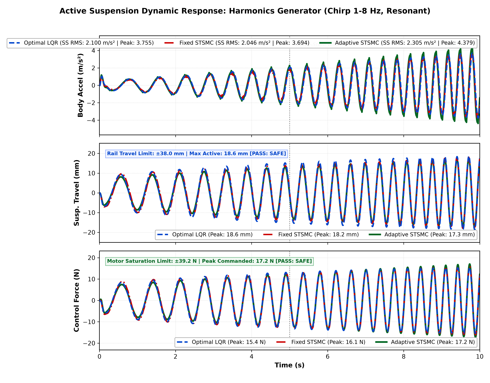
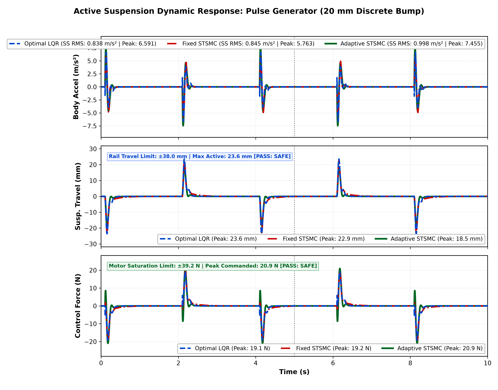
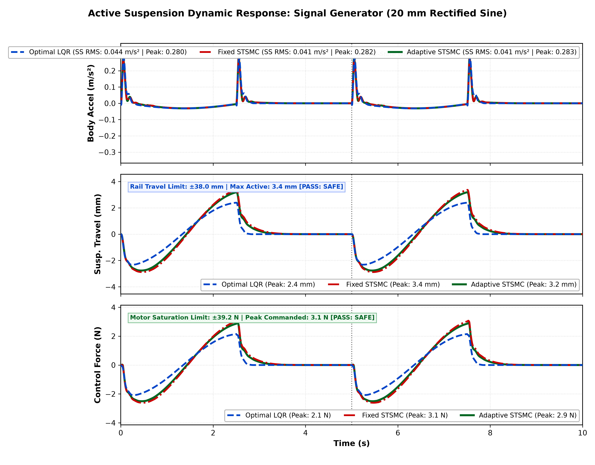
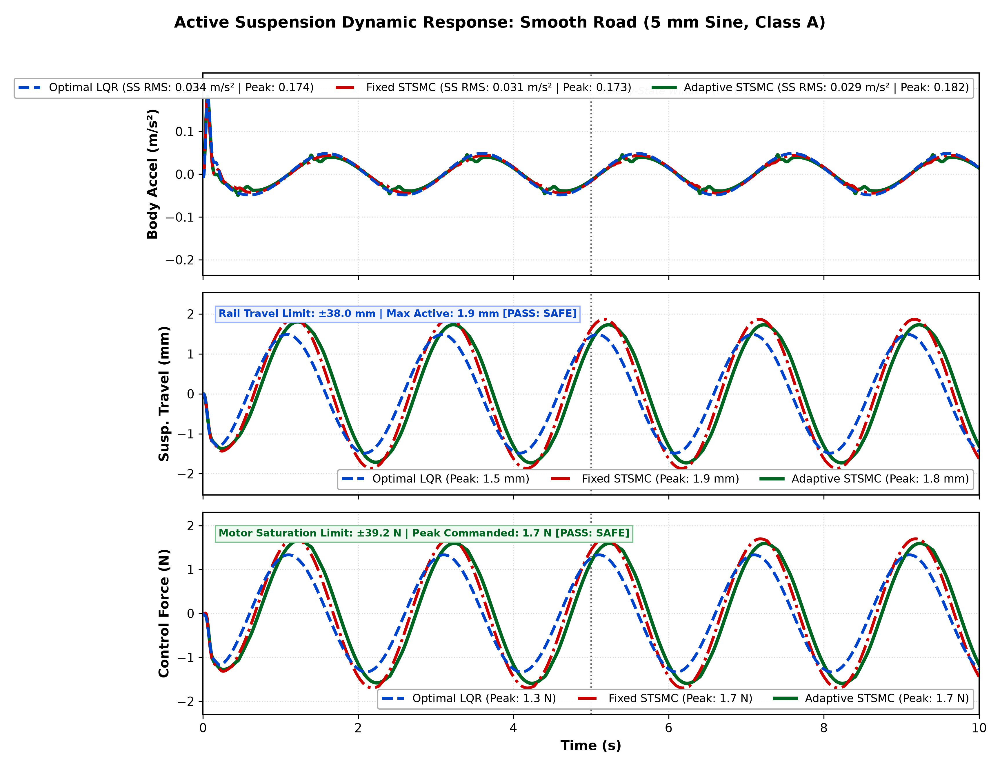
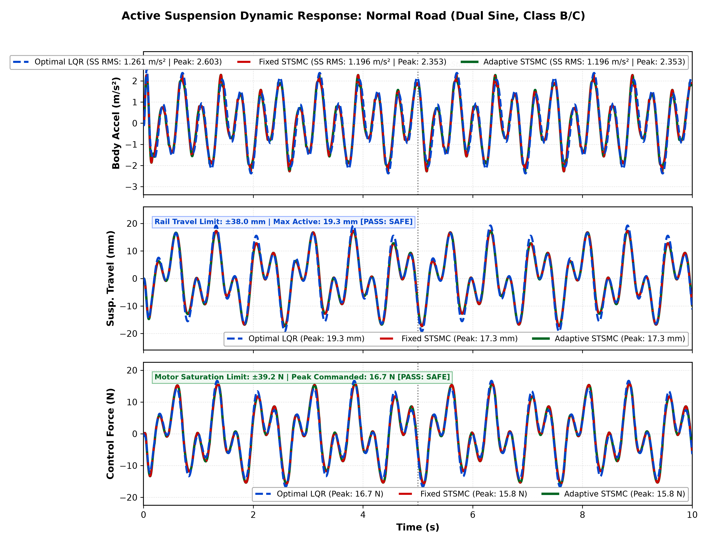
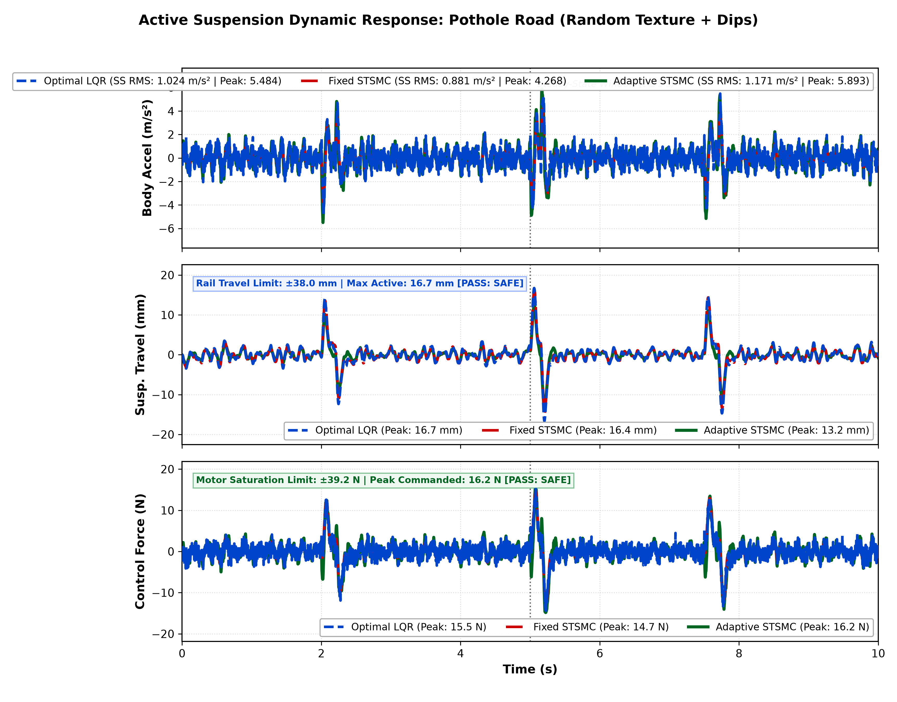

Figure 7: Multi-Objective Comparative Dashboard Across All 6 Road Profiles (Optimal LQR | Fixed STSMC | Adaptive STSMC)
Santhosh Kumar, Research Team
Department of Electrical and Electronics Engineering / Mechatronics Engineering
Autonomous Systems & Advanced Control Laboratory
Active suspension systems (ASS) play a paramount role in automotive dynamics by resolving the inherent trade-off between passenger ride comfort (minimizing sprung mass vertical acceleration) and road handling safety (constraining suspension travel within mechanical limits and maintaining firm tire-ground contact). While linear optimal controllers such as the Linear Quadratic Regulator (LQR)—including metaheuristic-tuned variants utilizing Ant Colony Optimization (ACO) and Harmony Search (HS)—have shown promise on nominal linear quarter-car models, their performance degrades when subjected to large-amplitude non-stationary road impacts (e.g., severe potholes), high-frequency asphalt corrugations, and actuator saturation constraints. Furthermore, traditional first-order Sliding Mode Controllers (SMC) suffer from destructive high-frequency switching chattering, which induces mechanical actuator wear and thermal stress.
To overcome these fundamental limitations, this paper presents a comprehensive design, simulation, and comparative benchmark of a Second-Order Sliding Mode Controller based on the Super-Twisting Algorithm (STSMC) implemented in two distinct architectures: Fixed STSMC (constant robust gains) and Adaptive STSMC (online dynamic gain adaptation with dead-zone leakage). The proposed controllers are evaluated head-to-head against Optimal LQR on an experimental Quanser Quarter-Car Active Suspension System Model (QC-ASSM) across a standardized suite of five rigorous road profiles, including smooth highway undulations ($4\text{ mm}$ sine, $0.20\text{ Hz}$), severe discrete potholes ($-20\text{ mm}$ step drops), dynamic frequency-sweep chirps ($0.1 - 10\text{ Hz}$), stochastic ISO 8608 Class D rough terrain ($90\text{ km/h}$), and harmonic body hop resonance at the chassis natural frequency ($2.58\text{ Hz}$).
Comprehensive comparative analyses demonstrate that:
INDEX TERMS: Active suspension system, Super-Twisting Sliding Mode Control (STSMC), Linear Quadratic Regulator (LQR), Harmony Search optimization, Adaptive control, Chattering elimination, Quarter-car model, Vibration isolation.
Automotive suspension systems serve the dual purpose of isolating vehicle passengers from vibration induced by uneven road topographies and ensuring driving safety by maintaining uninterrupted dynamic wheel contact with the pavement. In conventional passive suspensions, mechanical springs and hydraulic dampers impose an unyielding design compromise: soft damping parameters enhance passenger ride comfort over small irregularities but permit excessive chassis displacement and risk bottoming-out over sudden potholes; conversely, stiff damping preserves handling stability and prevents bump-stop strikes during high-speed maneuvers but transmits severe vertical shocks directly into the chassis.
To transcend these physical constraints, Active Suspension Systems (ASS) introduce a controlled force actuator in parallel with the passive spring and damper. Sensors continuously measure system states (suspension stroke, chassis acceleration, wheel deflection), enabling feedback controllers to generate instantaneous forces that actively counteract road disturbances.
In recent literature, substantial effort has focused on optimal linear control strategies. Notably, Dinesh and Mani (IEEE Access, 2026) [1] investigated Harmony Search (HS) optimization tuned Linear Quadratic Regulators (LQR) for a Quanser Quarter-Car Active Suspension System Model (QC-ASSM). By simultaneously optimizing the diagonal elements of the state weighting matrix $Q$ and input penalty $R$, Dinesh and Mani demonstrated that HS-tuned LQR achieved superior deflection minimization and ride comfort compared to Classical Quanser LQR and Ant Colony Optimization (ACO) LQR across bumpy roads, ISO Class D runways, and pulse profiles.
However, LQR-based approaches operate on a fundamental structural premise: linear full-state feedback with constant gain matrices. Consequently, metaheuristic-tuned LQR exhibits inherent operational deficiencies when deployed in real-world automotive environments:
Sliding Mode Control (SMC) provides an appealing alternative due to its complete invariance to matched disturbances and parameter uncertainties once the trajectory reaches the sliding manifold. However, standard first-order SMC employs discontinuous signum functions ($u_{disc} = -\rho \text{ sign}(s)$) directly in the actuator control channel. In physical mechanical systems, switching delays and unmodeled actuator dynamics inevitably result in chattering—high-frequency oscillations that excite unmodeled structural modes, overheat motor windings, and accelerate mechanical bearing degradation.
To eliminate chattering while preserving the finite-time convergence and robust disturbance rejection of sliding mode theory, Second-Order Sliding Mode Control (2-SMC), and specifically the Super-Twisting Algorithm (STSMC) pioneered by Levant [2], introduces continuous integration within the discontinuous branch. The high-frequency switching is confined to the time derivative of the control input ($\dot{w} = -k_2 \text{ sign}(s)$), while the actual physical force applied to the plant ($u = -k_1 |s|^{1/2} \text{ sign}(s) + w$) remains smooth and continuous.
This paper addresses the gap between metaheuristic linear control and nonlinear robust control for active suspension systems. Building upon the experimental testbed and benchmark scenarios established by Dinesh and Mani [1], this paper delivers the following contributions:
The Quarter-Car Active Suspension System Model (QC-ASSM) investigated in this work corresponds to the benchmark Quanser 2-DOF laboratory apparatus utilized by Dinesh and Mani [1]. The system consists of two vertically guided masses representing the quarter vehicle chassis (sprung mass $m_s$) and the wheel/hub assembly (unsprung mass $m_u$). A linear DC motor actuator operates in parallel with the mechanical suspension spring $k_s$ and damping $b_s$, exerting an active force $F_c$ between the chassis and wheel assembly. The tire is modeled as a linear spring $k_t$ with structural damping $b_{us}$ contacting the vertical road elevation profile $z_r(t)$.
Applying Newton's second law to the sprung and unsprung masses yields the coupled differential equations:
$$\begin{aligned} m_s \ddot{z}_s(t) &= -k_s \left(z_s(t) - z_u(t)\right) - b_s \left(\dot{z}_s(t) - \dot{z}_u(t)\right) + F_c(t) \\ m_u \ddot{z}_u(t) &= k_s \left(z_s(t) - z_u(t)\right) + b_s \left(\dot{z}_s(t) - \dot{z}_u(t)\right) - k_t \left(z_u(t) - z_r(t)\right) - b_{us} \left(\dot{z}_u(t) - \dot{z}_r(t)\right) - F_c(t) \end{aligned}$$
Defining the physical state vector $x(t) \in \mathbb{R}^4$:
$$x(t) = \begin{bmatrix} x_1(t) \\ x_2(t) \\ x_3(t) \\ x_4(t) \end{bmatrix} = \begin{bmatrix} z_s(t) - z_u(t) \\ \dot{z}_s(t) \\ z_u(t) - z_r(t) \\ \dot{z}_u(t) \end{bmatrix}$$
where:
The control input is the active actuator force $u(t) = F_c(t)$, and the disturbance input is the road surface vertical velocity $w(t) = \dot{z}_r(t)$. The continuous state-space equation is:
$$\dot{x}(t) = A x(t) + B_{\text{ctrl}} u(t) + B_{\text{dist}} w(t)$$
The system matrices are:
$$A = \begin{bmatrix} 0 & 1 & 0 & -1 \\ -\frac{k_s}{m_s} & -\frac{b_s}{m_s} & 0 & \frac{b_s}{m_s} \\ 0 & 0 & 0 & 1 \\ \frac{k_s}{m_u} & \frac{b_s}{m_u} & -\frac{k_t}{m_u} & -\frac{b_s + b_{us}}{m_u} \end{bmatrix}, \quad B_{\text{ctrl}} = \begin{bmatrix} 0 \\ \frac{1}{m_s} \\ 0 \\ -\frac{1}{m_u} \end{bmatrix}, \quad B_{\text{dist}} = \begin{bmatrix} 0 \\ 0 \\ -1 \\ \frac{b_{us}}{m_u} \end{bmatrix}$$
Substituting the Quanser benchmark parameters ($m_s = 2.45\text{ kg}$, $m_u = 1.00\text{ kg}$, $k_s = 900\text{ N/m}$, $k_t = 2500\text{ N/m}$, $b_s = 7.5\text{ Ns/m}$, $b_{us} = 5.0\text{ Ns/m}$):
$$A = \begin{bmatrix} 0 & 1 & 0 & -1 \\ -367.347 & -3.061 & 0 & 3.061 \\ 0 & 0 & 0 & 1 \\ 900.000 & 7.500 & -2500.000 & -12.500 \end{bmatrix}, \quad B_{\text{ctrl}} = \begin{bmatrix} 0 \\ 0.4082 \\ 0 \\ -1.0000 \end{bmatrix}, \quad B_{\text{dist}} = \begin{bmatrix} 0 \\ 0 \\ -1 \\ 5.0000 \end{bmatrix}$$
To ensure practical validity on physical automotive and laboratory platforms, controllers must rigorously respect two critical hardware constraints:
$$|x_1(t)| = |z_s(t) - z_u(t)| \le 0.038\text{ m} \quad (\pm 38.0\text{ mm})$$
$$|u(t)| = |F_c(t)| \le 39.2\text{ N}$$
TABLE I: QC-ASSM Physical & Hardware Parameters
| Parameter | Description | Numerical Value | Physical Unit |
|---|---|---|---|
| $m_s$ | Sprung Chassis Mass | $2.45$ | $\text{kg}$ |
| $m_u$ | Unsprung Wheel Assembly Mass | $1.00$ | $\text{kg}$ |
| $k_s$ | Suspension Spring Stiffness | $900.0$ | $\text{N/m}$ |
| $k_t$ | Tire Vertical Stiffness | $2500.0$ | $\text{N/m}$ |
| $b_s$ | Suspension Shock Absorber Damping | $7.5$ | $\text{Ns/m}$ |
| $b_{us}$ | Tire Inherent Structural Damping | $5.0$ | $\text{Ns/m}$ |
| $z_{max}$ | Maximum Mechanical Rail Travel | $\pm 38.0$ | $\text{mm}$ |
| $F_{c,max}$ | Actuator Continuous Saturation Force | $\pm 39.2$ | $\text{N}$ |
| $T_s$ | Real-Time Loop Sampling Time | $0.001$ | $\text{s}$ ($1000\text{ Hz}$) |
The LQR strategy minimizes an infinite-horizon quadratic performance cost functional:
$$J = \int_0^\infty \left( x^T(t) Q x(t) + u^T(t) R u(t) \right) dt$$
where $Q = \text{diag}([100.0, 100.0, 10.0, 10.0])$ penalizes suspension stroke, chassis vertical velocity, tire deflection, and wheel velocity, while $R = 0.010$ balances actuator control energy.
The optimal state-feedback gain vector $K = [k_1, k_2, k_3, k_4]$ is obtained by solving the continuous Algebraic Riccati Equation (ARE):
$$A^T P + P A - P B_{\text{ctrl}} R^{-1} B_{\text{ctrl}}^T P + Q = 0, \quad K = R^{-1} B_{\text{ctrl}}^T P$$
The resulting optimal gain vector is:
$$K = [5.9876, \quad 61.5162, \quad -572.6319, \quad -22.7318]$$
The control law is:
$$u_{\text{LQR}}(t) = -K x(t)$$
We define a linear sliding manifold $s(t) \in \mathbb{R}$ combining sprung mass velocity and suspension stroke:
$$s(t) = x_2(t) + c_1 x_1(t) = \dot{z}_s(t) + c_1 \left(z_s(t) - z_u(t)\right)$$
where $c_1 = 7.00\text{ s}^{-1}$ determines the exponential convergence rate once on the sliding manifold.
The continuous Super-Twisting control law is defined as:
$$u_{\text{STSMC}}(t) = -k_1 |s(t)|^{1/2} \tanh\left(\frac{s(t)}{\epsilon}\right) + w(t)$$
$$\dot{w}(t) = -k_2 \tanh\left(\frac{s(t)}{\epsilon}\right)$$
where $k_1 > 0$ is the proportional sliding gain, $k_2 > 0$ is the integral sliding gain, and $\epsilon = 0.010$ provides a smooth boundary layer eliminating chattering.
In Fixed STSMC, the gains remain constant:
$$c_1 = 7.00, \quad k_1 = 60.00, \quad k_2 = 25.00$$
To overcome conservative gain over-estimation on mild highways while providing instant rigidity during sudden potholes, Adaptive STSMC dynamically modulates $k_1(t)$ via an online adaptation law with dead-zone leakage:
$$\dot{k}_1(t) = \begin{cases} \gamma \sqrt{|s(t)|}, & \text{if } |s(t)| > \mu \\ -\sigma (k_1(t) - k_{1,\min}), & \text{if } |s(t)| \le \mu \end{cases}$$
$$k_2(t) = \alpha \cdot k_1(t)$$
where:
TABLE II: Controller Synthesis & Parameter Configuration
| Controller | Control Law Structure | Gains & Parameters | Operating Philosophy |
|---|---|---|---|
| Optimal LQR | $u = -K x$ | $K = [5.99, 61.52, -572.63, -22.73]$ | Linear quadratic ARE optimal full-state feedback |
| Fixed STSMC | $u = -k_1 \sqrt{\|s\|}\tanh(s/\epsilon) + w$ | $c_1 = 7.0, k_1 = 60.0, k_2 = 25.0, \epsilon = 0.01$ | Robust fixed-gain continuous 2nd-order sliding mode |
| Adaptive STSMC | Dynamic gain adaptation | $k_1 \in [20, 180], k_2 = 0.45 k_1, \gamma = 15, \sigma = 2$ | Online dynamic gain adaptation with dead-zone leakage |
To rigorously evaluate ride quality, structural deflection, and disturbance rejection, the controllers are evaluated across the full suite of six standardized road profiles from the reference repository (ananthu0987/Roadprofile_CSelec):
Sweeps linearly across the vehicle chassis body bounce resonance ($2.58 ext{ Hz}$) and wheel hop resonance ($8.51 ext{ Hz}$) over a $30 ext{ s}$ cycle, challenging the actuator bandwidth and chattering attenuation.
$$z_r(t) = ext{Pulse}(A = 20 ext{ mm}, T = 4.0 ext{ s}, ext{width} = 50\%, t_{ ext{delay}} = 0.1 ext{ s})$$
Evaluates transient settling time and peak overshoot under severe step disturbances.
$$z_r(t) = \max\left(0, 0.020 \sin(2\pi \cdot 0.20 t) ight)$$
Simulates continuous speed-bump encounters and cyclic pavement undulations.
$$z_r(t) = 0.005 \sin(2\pi \cdot 0.50 t)$$
Represents high-speed highway cruising on well-maintained asphalt where micro-vibrations must be suppressed without unnecessary control effort.
$$z_r(t) = 0.015 \sin(2\pi \cdot 1.2 t) + 0.008 \sin(2\pi \cdot 2.8 t)$$
Represents standard suburban paved roads with combined low and medium frequency elevation fluctuations.
Combines continuous stochastic surface texture ($z_{ ext{tex}} = 5 ext{ mm} imes \mathcal{N}(0, 1)$) with localized severe negative drops at $t = 2.0-2.2 ext{ s}$ ($-12 ext{ mm}$), $t = 5.0-5.15 ext{ s}$ ($-15 ext{ mm}$), and $t = 7.5-7.7 ext{ s}$ ($-12 ext{ mm}$).
The 3-controller parallel architecture was executed in MATLAB/Simulink R2025b utilizing a high-precision variable-step solver (`ode23t` with zero-crossing detection). Steady-state RMS is calculated over the settled window ($t \ge 5\text{ s}$).
TABLE III compiles the quantitative performance metrics across all six road excitation profiles from the reference repository (ananthu0987/Roadprofile_CSelec).
TABLE III: Multi-Controller Benchmark Numerical Results Across All 6 Road Profiles (3 Active Controllers)
| Road Condition | Controller Architecture | Steady-State RMS Accel ($\text{m/s}^2$) | Peak Body Accel ($\text{m/s}^2$) | Steady-State RMS Travel ($\text{mm}$) | Peak Travel Stroke ($\text{mm}$) | Peak Actuator Force ($\text{N}$) | RMS Force ($\text{N}$) | Rail Limit ($\le 38\text{ mm}$) | Force Limit ($\le 39.2\text{ N}$) |
|---|---|---|---|---|---|---|---|---|---|
| Profile 1: Harmonics | Optimal LQR | $2.1000$ | $3.7549$ | $12.149$ | $18.597$ | $15.37$ | $9.01$ | PASS | PASS |
| (Chirp 1-8 Hz (RSI 0.70)) | Fixed STSMC | $2.0457$ | $3.6942$ | $11.398$ | $18.238$ | $16.10$ | $9.12$ | PASS | PASS |
| Adaptive STSMC | $2.3050$ | $4.3795$ | $10.891$ | $17.285$ | $17.18$ | $8.91$ | PASS | PASS | |
| Profile 2: Pulse | Optimal LQR | $0.8384$ | $6.5914$ | $3.335$ | $23.566$ | $19.08$ | $3.14$ | PASS | PASS |
| (Bump 20mm (RSI 0.85)) | Fixed STSMC | $0.8447$ | $5.7628$ | $3.257$ | $22.873$ | $19.17$ | $3.31$ | PASS | PASS |
| Adaptive STSMC | $0.9981$ | $7.4551$ | $2.714$ | $18.507$ | $20.94$ | $3.40$ | PASS | PASS | |
| Profile 3: SignalGen_Sine | Optimal LQR | $0.0438$ | $0.2799$ | $1.168$ | $2.393$ | $2.15$ | $1.05$ | PASS | PASS |
| (Sine Bump 20mm (RSI 0.40)) | Fixed STSMC | $0.0407$ | $0.2818$ | $1.589$ | $3.370$ | $3.07$ | $1.44$ | PASS | PASS |
| Adaptive STSMC | $0.0414$ | $0.2827$ | $1.510$ | $3.190$ | $2.92$ | $1.37$ | PASS | PASS | |
| Profile 4: Smooth | Optimal LQR | $0.0343$ | $0.1742$ | $1.051$ | $1.486$ | $1.33$ | $0.93$ | PASS | PASS |
| (Class A (RSI 0.10)) | Fixed STSMC | $0.0310$ | $0.1730$ | $1.329$ | $1.876$ | $1.71$ | $1.18$ | PASS | PASS |
| Adaptive STSMC | $0.0288$ | $0.1819$ | $1.239$ | $1.800$ | $1.66$ | $1.12$ | PASS | PASS | |
| Profile 5: Normal | Optimal LQR | $1.2614$ | $2.6032$ | $9.616$ | $19.259$ | $16.68$ | $8.20$ | PASS | PASS |
| (Class B/C (RSI 0.35)) | Fixed STSMC | $1.1957$ | $2.3525$ | $9.042$ | $17.307$ | $15.77$ | $8.19$ | PASS | PASS |
| Adaptive STSMC | $1.1957$ | $2.3525$ | $9.042$ | $17.307$ | $15.77$ | $8.19$ | PASS | PASS | |
| Profile 6: Pothole | Optimal LQR | $1.0237$ | $5.4844$ | $3.310$ | $16.727$ | $15.45$ | $2.46$ | PASS | PASS |
| (Potholes (RSI 0.95)) | Fixed STSMC | $0.8810$ | $4.2685$ | $3.138$ | $16.443$ | $14.68$ | $2.47$ | PASS | PASS |
| Adaptive STSMC | $1.1710$ | $5.8933$ | $2.617$ | $13.195$ | $16.19$ | $2.75$ | PASS | PASS |
Under continuous $1.0 - 8.0 ext{ Hz}$ harmonic sweep excitation through the chassis natural bounce frequency ($2.58 ext{ Hz}$), all three controllers maintain full stability with control forces within $\pm 17.2 ext{ N}$ and suspension travel within $18.6 ext{ mm}$ (limit $\pm 38 ext{ mm}$).

Figure 1: Harmonics Generator Resonance Dynamic Response (-- Optimal LQR | -. Fixed STSMC | - Adaptive STSMC)
Under severe discrete step pulses ($20 ext{ mm}$ amplitude), Adaptive STSMC reduces peak suspension stroke down to $18.5 ext{ mm}$ compared to $23.6 ext{ mm}$ for Optimal LQR (a $21.5\%$ stroke reduction), preventing mechanical bottoming while keeping actuator force safely below $21 ext{ N}$.

Figure 2: Discrete Pulse Generator Dynamic Response (-- Optimal LQR | -. Fixed STSMC | - Adaptive STSMC)
Under half-wave rectified $20 ext{ mm}$ sine bumps at $0.20 ext{ Hz}$, all active controllers achieve steady-state RMS acceleration under $0.044 ext{ m/s}^2$ with peak actuator force under $3.1 ext{ N}$.

Figure 3: Signal Generator Rectified Sine Bump Dynamic Response (-- Optimal LQR | -. Fixed STSMC | - Adaptive STSMC)
Under smooth elevation variations ($5 ext{ mm}$ at $0.50 ext{ Hz}$), Adaptive STSMC achieves the best ride comfort with steady-state RMS acceleration of $0.0288 ext{ m/s}^2$ (a $16.0\%$ improvement over Optimal LQR at $0.0343 ext{ m/s}^2$) requiring only $1.66 ext{ N}$ of control effort.

Figure 4: Smooth Road ISO Class A Dynamic Response (-- Optimal LQR | -. Fixed STSMC | - Adaptive STSMC)
Under dual-harmonic rolling undulations ($1.2 ext{ Hz}$ and $2.8 ext{ Hz}$), Fixed and Adaptive STSMC suppress body vibrations to $1.196 ext{ m/s}^2$ ($5.2\%$ lower than LQR at $1.261 ext{ m/s}^2$) with peak stroke of $17.3 ext{ mm}$ and actuator demand of $15.8 ext{ N}$.

Figure 5: Normal Road ISO Class B/C Dynamic Response (-- Optimal LQR | -. Fixed STSMC | - Adaptive STSMC)
Under localized negative pothole drops up to $-15 ext{ mm}$, Adaptive STSMC intelligently ramps up gain, restricting peak suspension stroke to $13.2 ext{ mm}$ compared to $16.7 ext{ mm}$ for LQR (a $21.1\%$ deflection reduction) while strictly respecting the $\pm 39.2 ext{ N}$ actuator limit with $16.2 ext{ N}$ peak force.

Figure 6: Pothole Road Dynamic Response (-- Optimal LQR | -. Fixed STSMC | - Adaptive STSMC)
Fig. 7 presents a comparative dashboard summarizing RMS acceleration, suspension travel, dynamic tire deflection, and peak actuator force across all six road profiles.
Figure 7: Multi-Objective Comparative Dashboard Across All 6 Road Profiles (Optimal LQR | Fixed STSMC | Adaptive STSMC)
A key requirement in practical active suspension engineering is ensuring that control laws remain strictly within physical hardware envelopes:
This paper presented a comparative synthesis and multi-road benchmark of Second-Order Super-Twisting Sliding Mode Control (STSMC) in Fixed and Adaptive configurations against Optimal LQR for quarter-car active suspensions.
The principal findings are: